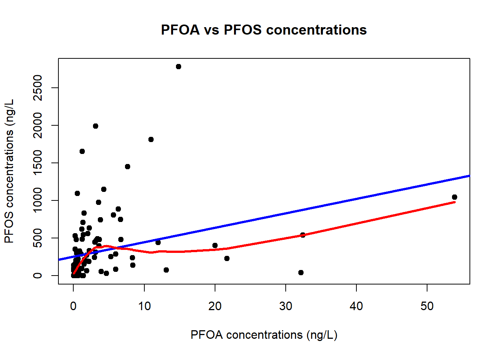
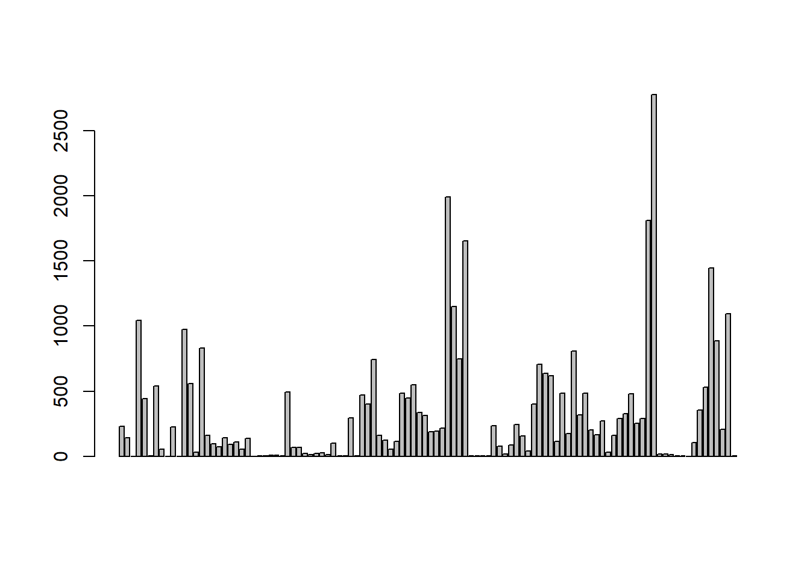
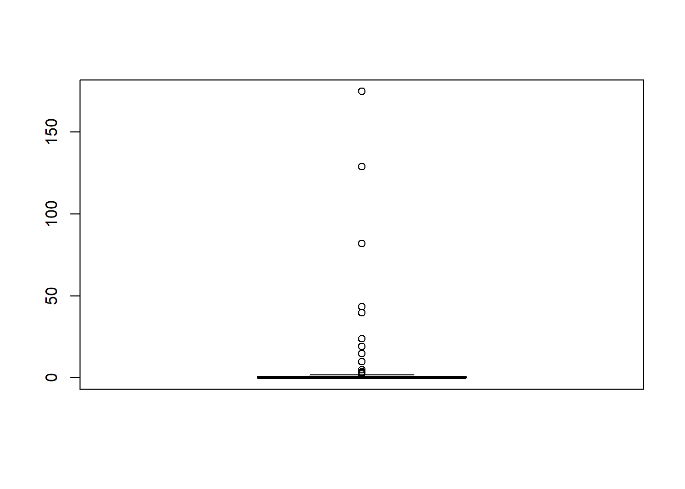

x <- 10.5
class(x)[1] "numeric"( ) parentheses
[ ] brackets
{ } curly brackets
/ forward slash
/ when indicating file path, which is different from Windows that uses backslash \. If you get an error when inputting a file path, then check if you have the correct forward slash (or you can also use double backslash \\).Basic data types in R can be divided into the following types:
numeric : (10.5, 55, 787)
integer (a.k.a. double) : (1L, 55L, 100L, where the letter “L” declares this as an integer)
complex : (9 + 3i, where “i” is the imaginary part)
character (a.k.a. string) : (“k”, “R is exciting”, “FALSE”, “11.5”)
logical (a.k.a. boolean) : (TRUE or FALSE)
We can use the class() function to check the data type of a variable:
Numeric (also called double)
x <- 10.5
class(x)[1] "numeric"Integer
x <- 1000L
class(x)[1] "integer"Complex
# We will not deal with complex data in this course
x <- 9i + 3
class(x)[1] "complex"Character/String
x <- "Hello World"
# You can also use str() to check the data type of an object. This function will give more detailed information about the elements in the object
str(x) chr "Hello World"Logical/Boolean
# a vector of logical/boolean
x <- c(TRUE, FALSE)
str(x) logi [1:2] TRUE FALSEIf you concatenate elements of different data types in a vector, then R will convert the elements in the following order: 1. string; 2. numeric; 3. integer; 4. logical. It means that all other data types will be converted to a string if you combine these elements with a string element.
# If you want to create (or convert) an object of a specific data type, then use the as.xxx functions.
a_string <- as.character("A Space Odyssey")
# You can also skip the as.character and directly use: a_string <- "A Space Odyssey". R will recognize is as a string and automatically choose the correct data type.
a_integer <- as.integer(2001)
a_numeric <- as.numeric(99.999)
a_logical <- as.logical(TRUE)
c(a_integer, a_string)[1] "2001" "A Space Odyssey"c(a_integer, a_numeric)[1] 2001.000 99.999c(a_integer, a_logical)[1] 2001 1You cannot create a datatype that R doesn’t recognize
object1 <- as.integer("Hello")Warning: NAs introduced by coercionstr(object1) int NABelow are some basic data structures in R:
vectorslistsmatricesdataframesfactorsVectors
vectors: also called atomic vectors, where all elements must be of the same basic data types.# A string vector
a_vector_strings <- c("This", "is", "a", "vector", "of", "string", "elements")
str(a_vector_strings) chr [1:7] "This" "is" "a" "vector" "of" "string" "elements"# integer vectors
a_vector_integers1 <- c(99, 98)
a_vector_integers2 <- c(1, 2, 3, 4, 5)
str(a_vector_integers1) num [1:2] 99 98What happens when we perform operations with two or more vectors of different length? First, we can use the length() function to check the length of a vector:
length(a_vector_integers1)[1] 2length(a_vector_integers2)[1] 5We can use == as an equal operator to check if both vectors have the same length
length(a_vector_integers1) == length(a_vector_integers2)[1] FALSEWe can see that this will be FALSE since the length of the two vectors are not equal.
The opposite is to use the `!=` (not equal to) operator:
length(a_vector_integers1)!= length(a_vector_integers2)[1] TRUEFinally, we can see that when performing addition operation of a_vector_integers1 (99, 98) with a_vector_integers2 (1, 2, 3, 4, 5), R will recycle the shorter vector
combine_vectors <- a_vector_integers1 + a_vector_integers2Warning in a_vector_integers1 + a_vector_integers2: longer object length is not
a multiple of shorter object lengthstr(combine_vectors) num [1:5] 100 100 102 102 104R will therefore perform the element-wise operations 99+1, 98+2, 99+3, 98+4, 99+5, and the resulting object will have the same length as a_vector_integers2.
Matrices
A matrix is a 2 dimensional data structure for vectors of the same datatype.
The elements are arranged in 2-dim rectangular layout.
Example 1.
a_matrix_num <- matrix(data = 1:10, nrow = 2, ncol = 5)
a_matrix_num [,1] [,2] [,3] [,4] [,5]
[1,] 1 3 5 7 9
[2,] 2 4 6 8 10Example 2. The object letters is a built constant in to base R and can be called to generate a sequence of lower case alphabetic letters. Yo can index it to subset the different letters.
letters [1] "a" "b" "c" "d" "e" "f" "g" "h" "i" "j" "k" "l" "m" "n" "o" "p" "q" "r" "s"
[20] "t" "u" "v" "w" "x" "y" "z"matrix(data = letters[1:10], nrow = 5) [,1] [,2]
[1,] "a" "f"
[2,] "b" "g"
[3,] "c" "h"
[4,] "d" "i"
[5,] "e" "j" You dont need to specify both ncol or nrow, then R will automatically fit based on the one specified nrwo or ncol argument.
What will happen if you run this code: matrix(data = letters[1:10], nrow = 3) ?
To check the dimension of the matrix, use dim function:
dim(a_matrix_num)[1] 2 5Lists
We can also store elements of different datatypes in list objects.
a_vector_integers1 <- c(99, 98)
a_vector_strings <- c("This", "is", "a", "vector", "of", "string", "elements")
# In this case, we use the list() function.
a_list <- list(vec_int = a_vector_integers1,
vec_str = a_vector_strings)
# If you dont name the elements within the list then these will be unamed.To subset an element within the list you can use index (Spatial Data Science, n.d.). There is difference between single [] and double brackets[[]]. Can you see the differences between the below indexing?
a_list[1]$vec_int
[1] 99 98a_list[[1]][1] 99 98a_list[1][1]$vec_int
[1] 99 98a_list[[1]][1][1] 99You can also use the name of the element for subsetting.
a_list["vec_int"]$vec_int
[1] 99 98The dollar-sign $ can also be used.
# These three subsetting operations will give the same results
a_list$vec_int[1] 99 98a_list["vec_int"]$vec_int
[1] 99 98a_list[[1]][1] 99 98Dataframes
Dataframes are similar as lists but flattened into a 2-D rectangular form, similar as tables. The length of individual objects have to be the same.
sample_data <- data.frame(sample_id = c(1, 2, 3, 4),
sample_name = c("Inflow", "Mid_stream", "Outflow", "River"),
measured_PFOS = c(TRUE, TRUE, TRUE, FALSE),
conc_PFOS_ngL = c(99, 5, 123, NA))When naming an object or variables (in a data frame), start with a letter and avoid using special characters and `space`. Sometimes, when importing datasets from other sources that contain space, then these variables are converted to `Name of variable` using the backticks. To access the variable, you will also need to use the backticks ``
Factors
See these videos:
https://www.youtube.com/watch?v=xkRBfy8_2MU
https://www.youtube.com/watch?v=cspQYQLZbCo
(from https://discdown.org/rprogramming/vectors.html)
R is an object-oriented programming language with the fundamental design principle: Everything in R is an object. In R, objects can be:
The different comparison operators will be handy for various data analysis:
See: https://www.w3schools.com/r/r_operators.asp
Comparison operators
| Operator | Name |
|---|---|
== |
equal to |
!= |
not equal to |
=> |
equal or greater than |
=< |
equal or less than |
> |
greater than |
< |
less than |
Arithmetic Operators
| Operator | Name | Example |
|---|---|---|
| + | Addition | x + y |
| - | Subtraction | x - y |
| * | Multiplication | x * y |
| / | Division | x / y |
| ^ | Exponent | x ^ y |
| %% | Modulus (Remainder from division) | 10 %% 5 |
| %/% | Integer Division | x%/%y |
Logical Operators
| Operator | Description |
|---|---|
| & | Element-wise Logical AND operator. It returns TRUE if both elements are TRUE |
| && | Logical AND operator - Returns TRUE if both statements are TRUE |
| | | Elementwise- Logical OR operator. It returns TRUE if one of the statement is TRUE |
| || | Logical OR operator. It returns TRUE if one of the statement is TRUE. |
| !| | Logical NOT - returns FALSE if statement is TRUE |
Other useful operators
| Operator | Description | Example |
|---|---|---|
| : | Creates a series of numbers in a sequence | 1:10 (creates a sequence from 1 to 10) |
| %in% | Find out if an element belongs to a vector | 2%in%1:10 (check if 2 is found in the vector 1:10, evaluates to TRUE ) |
| %*% | Matrix Multiplication | m <- matrix(1:8, nrow=2); 2*m (will multiply every element with 2) |
See: https://r-graphics.org/loading-a-delimited-text-data-file, and https://r-graphics.org/loading-data-from-an-excel-file
We will use a dataset in excel format from a study on PFAS levels in insects around a pond in Kumla in Sweden for our data analysis. You can find the dataset here: https://github.com/WBS-TW/Course_R_for_environ_chem_data_analysis/tree/master/data
PFAS_insects <- readxl::read_excel("data/Statistics_Kumla_20200408.xlsx",
sheet = "Overview")Base R plots are those functions that come with the R version. Additional packages that are easier to handle and have more advanced features will be demonstrated later.
Scatter plot: plot()
# http://www.sthda.com/english/wiki/scatter-plots-r-base-graphs
plot(x = PFAS_insects$PFOA, y = PFAS_insects$PFOS, main = "PFOA vs PFOS concentrations",
xlab = "PFOA concentrations (ng/L)",
ylab = "PFOS concentrations (ng/L",
pch = 19) # choosing symbol for points in a graph (see ?pch for number/symbol)
# We can add a regression line into the same graph
abline(lm(PFAS_insects$PFOS ~ PFAS_insects$PFOA, data = PFAS_insects), col = "blue", lwd = 3) # lwd is the line width
# as well as a loess fit
lines(lowess(PFAS_insects$PFOA, PFAS_insects$PFOS), col = "red", lwd = 3)
# to clear the graphics from the Plots pane, use graphics.off() in the script or dev.off() in the consoleBar plots: barplot()
groupsPFOS <- PFAS_insects[, c("Group", "PFOS")] # subset two variables from the dataframe
groupsPFOS$Group <- as.factor(groupsPFOS$Group)
barplot(height = PFAS_insects$PFOS)
Box plots: boxplot()
# Box plot of one variable
boxplot(PFAS_insects$PFBS)